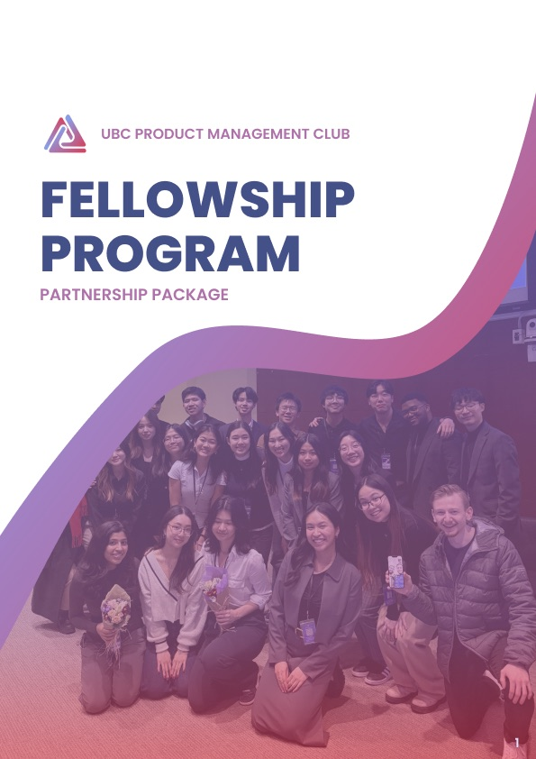
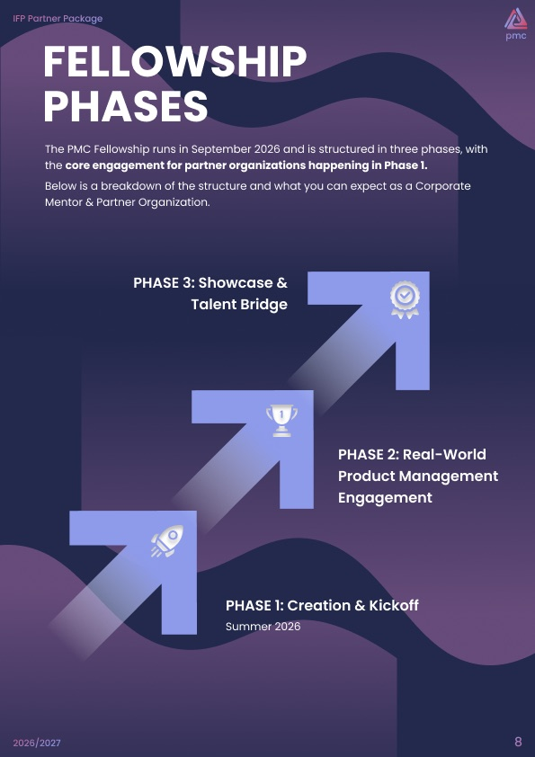
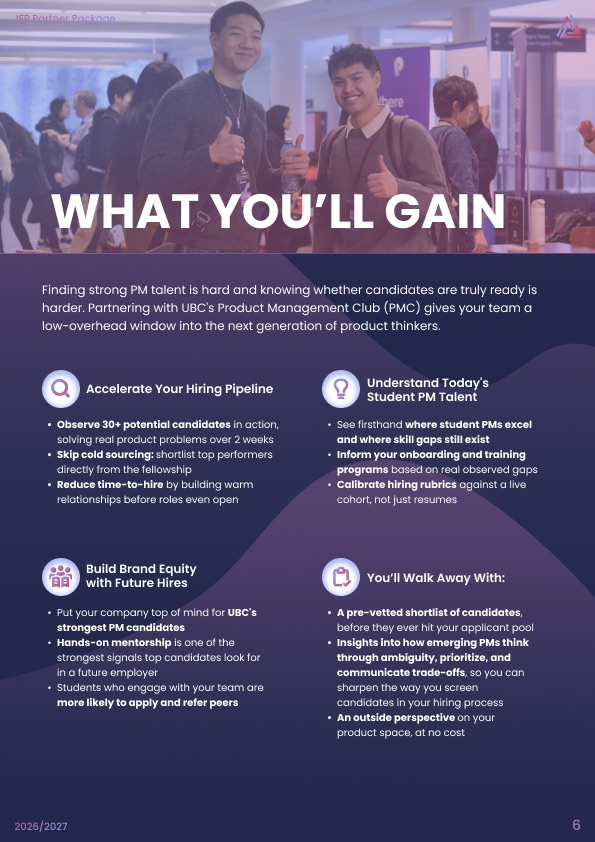
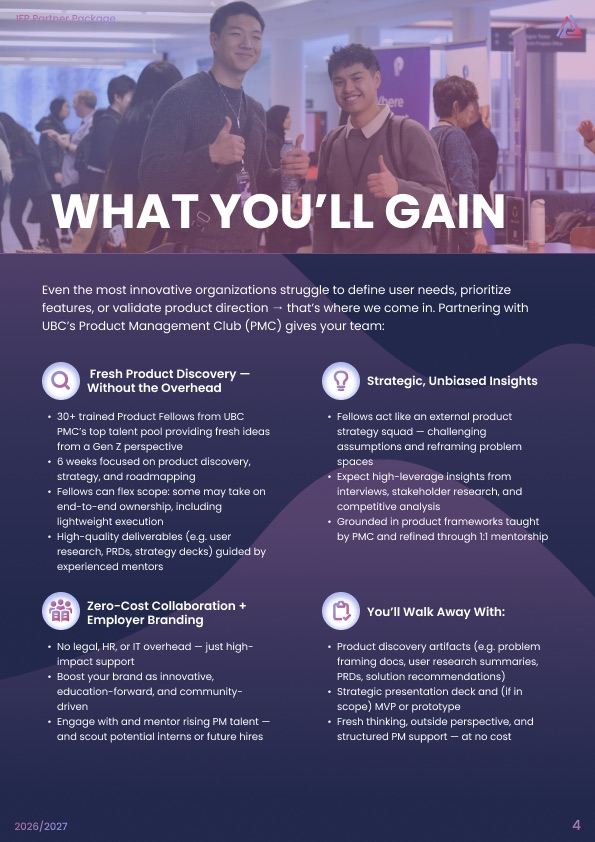

What it is
The UBC Product Management Club needed a package that could explain its Internal Fellowship Program to prospective partners without a separate walkthrough. I worked on the content structure and visual hierarchy so someone could scan the file and understand the program, the partnership options, and what to do next. The team has used the package in outreach to more than 20 companies.
What I worked on
I contributed to the package rather than designing every page of it. My part was the order of the content and how a reader moves through it. A company opening the file for the first time needs the program explained before the ask, the partnership options laid out where they are easy to compare, and a clear next step at the end.
The file is sent ahead of any conversation, so it has to answer the obvious questions on its own. I worked on the hierarchy with that in mind, so the lines that matter are the ones a reader lands on while skimming.


Eleven pages in the full file. Three of them here.

The earlier page opened with what the fellows would do and how they would work. The page in the file now opens with the problem a partner has, and each list leads with what the partner gets out of it.
Both versions live in the same Figma file. The earlier one sits on its Archive page.
Where it sits in the club
I am the Executive Development Program Manager for the club, which has more than 800 members and more than 40 executives. Partnership materials sit next to the rest of that work: contacting speakers, preparing workshop decks, hosting sessions and running the debrief in FigJam afterwards.
What is still missing from this page
Three pages of eleven are shown here, and I have not written up the rest of what changed between drafts. The full file is public in Figma in the meantime.